Test da Olimpiadi della Fisica
Esercizi su impulso e quantità di moto
JQuiz realizzato con HotPotatoes
-
A un certo istante, un proiettile di massa 100 g, dopo aver superato il punto più alto della sua traiettoria, ha una velocità di modulo 500 m s-1 inclinata rispetto all'orizzontale di un angolo α, tale che tan α = 4/3.
Nello stesso istante il proiettile esplode in due parti, una delle quali di 60 g, si allontana con una velocità orizzontale di 500 m s-1.
Di conseguenza, la velocità dell'altro frammento, nello stesso istante, è . . .- . . . 500 m s-1 nella stessa direzione, ma verso opposto alla velocità della prima.
- . . . 1000 m s-1 in direzione verticale.
- . . . 500 m s-1 nella stessa direzione e verso della prima.
- . . . 400 m s-1 in direzione verticale.
- . . . zero: si ferma.
-
Quale delle seguenti terne di grandezze fisiche contiene due grandezze vettoriali e una sola grandezza scalare?
- Tempo, lavoro e forza.
- Accelerazione, massa e quantità di moto.
- Velocità, forza e quantità di moto.
- Accelerazione, velocità e momento della quantità di moto.
- Densità, energia cinetica e quantità di moto.
-
Sulla maggior parte delle automobili viene adesso montato il dispositivo noto come "
airbag " che si gonfia automaticamente e istantaneamente in caso di urto contro un ostacolo.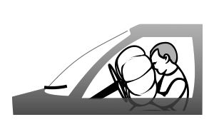
Lo scopo dell'airbag è quello di proteggere il guidatore. . .- . . . aumentando la variazione della sua quantità di moto per unità di tempo.
- . . . riducendo la variazione della sua quantità di moto per unità di tempo.
- . . . riducendo la sua velocità finale.
- . . . riducendo la variazione totale della sua quantità di moto.
- . . . aumentando la variazione totale della sua quantità di moto.
-
Due sfere uguali, ciascuna di massa
m , si muovono con velocità di modulov l'una verso l'altra; se l'urto tra le sfere è centrale ed elastico, allora . . .
1 - . . . la somma della quantità di moto prima dell'urto è2mv .
2 - . . . la somma delle energie cinetiche prima dell'urto èmv2 .
3 - . . . la somma delle energie cinetiche dopo l'urto è zero.
Quale o quali delle precedenti affermazioni sono corrette?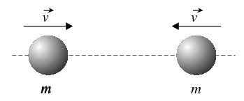
- Solo la 1.
- Solo la 2.
- Solo la 3.
- Solo la 2 e la 3.
- Solo la 1 e la 2.
-
Si scelga quale, tra le seguenti coppie, comprende una grandezza vettoriale e una grandezza scalare.
- Spostamento e accelerazione.
- Forza ed energia cinetica.
- Potenza e massa.
- Lavoro ed energia potenziale.
- Velocità e quantità di moto.
-
Due satelliti si urtano, nello spazio, anelasticamente.
Cosa accade all'energia cinetica e alla quantità di moto totale dei due satelliti?- L'energia cinetica totale si conserva e la quantità di moto totale si conserva.
- L'energia cinetica totale si conserva e la quantità di moto totale aumenta.
- L'energia cinetica totale si riduce e la quantità di moto totale si conserva.
- L'energia cinetica totale si conserva e la quantità di moto totale aumenta.
- L'energia cinetica totale si riduce e la quantità di moto totale si riduce.
-
Una pallina da golf viene fatta cadere da ferma sopra un pavimento rigido. Essa rimbalza fino ad un'altezza più bassa rispetto al punto di caduta perché perde energia durante l'urto con il pavimento. La pallina viene afferrata nel punto più alto del suo primo rimbalzo.
I grafici seguenti rappresentano come varia, durante la caduta ed il rimbalzo, una certa grandezza fisica,y in funzione del tempo.
Si può assumere che gli effetti della resistenza dell'aria siano trascurabili.
Quale di questi grafici rappresenta meglio come varia la quantità di moto della pallina, in funzione del tempo, durante la caduta e il rimbalzo? -
Se
p è la quantità di moto di un corpo di massam , l'espressionep2 / m ha le dimensioni fisiche di . . .- . . . un'accelerazione.
- . . . un'energia.
- . . . una forza.
- . . . una potenza.
- . . . una velocità.
-
Un cannone di massa 1 000 kg, montato su ruote, spara orizzontalmente un proiettile di massa 10 kg con una velocità di 100 m s-1, verso est.
La velocità di rinculo del cannone, subito dopo lo sparo, è- 0
- 1 m s-1, verso est.
- 1 m s-1, verso ovest.
- 10 m s-1, verso est.
- 10 m s-1, verso ovest.
-
Sei carrelli identici sono attaccati uno all'altro e si trovano in quiete su una rotaia orizzontale. Un settimo carrello, identico ai precedenti, che viaggia ad 1 m s-1 urta i carrelli fermi rimanendovi attaccato.
Trascurando effetti di attrito, la velocità con cui i sette carrelli iniziano a muoversi è, in m s-1, ...- ... 1
- ... 1/√ 7
- ... 1/6
- ... 1/7
- ... 6/7
-
La massa di un uomo di corporatura media è di 70 kg.
Tra le seguenti grandezze quali sono stimate correttamente?
1 - Quando cammina speditamente, la sua energia cinetica è di 70 J.
2 - Quando corre velocemente, la sua quantità di moto è di 70 N s.
3 - Quando sta fermo in piedi, la pressione esercitata sul suolo è di 70 Pa.- Tutte e tre
- Solo la 1 e la 2
- Solo la 2 e la 3
- Solo la 1
- Solo la 3
-
Un oggetto è lanciato verticalmente verso l'alto a una data velocità.
Trascurando la resistenza dell'aria e la variazione dell'accelerazione di gravità con l'altezza, quale delle seguenti affermazioni è corretta?- L'energia cinetica dell'oggetto è massima alla massima altezza raggiunta.
- Se la velocità iniziale raddoppia, la massima altezza raggiunta è quattro volte maggiore.
- La quantità di moto dell'oggetto è costante durante il moto.
- L'oggetto percorre distanze uguali in tempi uguali sia durante la salita che durante la discesa.
- L'energia potenziale dell'oggetto cresce della stessa quantità ogni secondo durante la salita.
-
Il momento d'inerzia ha come dimensioni ...
- ... [M][L][T]
- ... [M][L]2[T]-2
- ... [M][L]-1[T]-2
- ... [M][L]2
- ... [M][L]2[T]-1
-
Una palla di massa 0.6 kg, inizialmente ferma, viene colpita con una mazza di legno. La palla rimane in contatto con la mazza per 0.2 s e quando se ne discosta la sua velocità è di 25 m s-1.
Quanto vale l'intensità media della forza esercitata dalla palla sulla mazza?- 3 N
- 8.3 N
- 15 N
- 75 N
- 150 N
-
In figura sono mostrati due carrelli posti su una superficie orizzontale priva di attrito, mentre sono spinti via da una molla che viene fatta scattare.
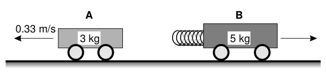
Il carrello A ha una massa di 3 kg, quello B di 5 kg. Il primo si muove con una velocità di 0.33 m s-1.
Se inizialmente i carrelli erano fermi, qual è la velocità del carrello B?- 0.12 m s-1
- 0.20 m s-1
- 0.27 m s-1
- 0.33 m s-1
- 0.55 m s-1
-
Un oggetto di massa pari a 2 kg che si sta muovendo ad una velocità di 10 m s-1 in direzione nord subisce un urto perfettamente elastico con un oggetto di massa pari a 5 kg che sta viaggiando ad una velocità di 4 m s-1 verso sud.
Quanto vale la quantità di moto totale del sistema dei due oggetti immediatamente dopo l'urto?- 0
- 20 kg m s-1, verso nord
- 20 kg m s-1, verso sud
- 40 kg m s-1, verso nord
- 40 kg m s-1, verso sud
-
La figura rappresenta il grafico di una forza
Fx(t) che dipende dal tempo e che agisce su una particella che si sta muovendo lungo una direzionex .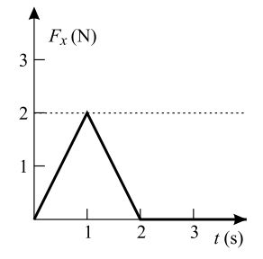
Quanto vale l'impulso totale trasmesso alla particella?- 0
- 1 kg m s-1
- 2 kg m s-1
- 3 kg m s-1
- 4 kg m s-1
-
Una particella di massa
m , che inizialmente si sta muovendo lungo l'assex con una velocitàv , urta una particella di massa2m inizialmente ferma. In seguito all'urto la prima particella si ferma, mentre la seconda particella si divide in due parti di uguale massa che si muovono in direzioni che formano uno stesso angolo θ (diverso da zero) con l'assex , come mostrato in figura.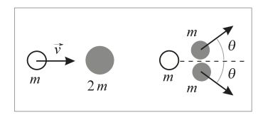
Quale delle seguenti affermazioni descrive correttamente la velocità delle due parti?-
Entrambe le parti si muovono con velocità
v . -
Una delle due parti si muove con velocità
v , l'altra con velocità minore div . -
Entrambe le parti si muovono con velocità
v/2 . -
Una delle due parti si muove con velocità
v/2 , l'altra con velocità maggiore div/2 . -
Entrambe le parti si muovono con velocità maggiore di
v/2 .
-
Entrambe le parti si muovono con velocità
-
In un urto unidimensionale non relativistico, una particella di massa
2m colpisce una particella di massam inizalmente ferma.
Se le particelle rimangono unite dopo l'urto, quale frazione dell'energia cinetica iniziale viene persa nell'urto?- 0
- 1/4
- 1/3
- 1/2
- 2/3
-
Il grafico mostra l'andamento della velocità in funzione del tempo per due corpi A e B che si urtano frontalmente in maniera elastica. Si supponga che la risultante delle forze esterne agenti sul sistema dei due corpi sia nulla.
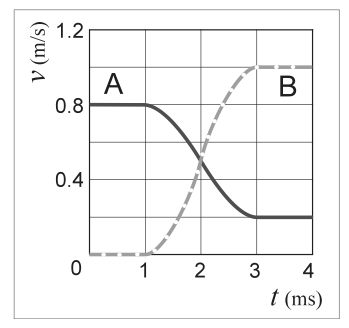
Quali, tra le seguenti affermazioni, sono corrette?
1 - Dopo l'urto A e B si muovono nello stesso verso.
2 - Le velocità A e B sono uguali nell'istante centrale della collisione.
3 - La massa di B è maggiore di quella di A.- Solo la 1.
- Solo la 2.
- Solo la 1 e la 2.
- Solo la 2 e la 3.
- Tutte e tre.
-
Su una rotaia a cuscino d'aria, orizzontale, un carrello A di massa 1.5 kg urta contro un carrello B di massa 2.0 kg inizialmente fermo (si veda la figura). Al carrello B è attaccato un respingente a molla.
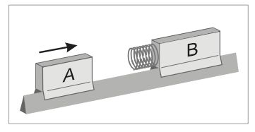
La distanza tra i due carrelli raggiunge il suo valore minimo. . .- . . . quando il carrello B è ancora fermo.
- . . . quando il carrello A si arresta.
- . . . quando i due carrelli hanno la stessa energia cinetica.
- . . . quando i due carrelli hanno la stessa quantità di moto.
- . . . quando l'energia cinetica del sistema raggiunge il suo valore minimo.
-
La risultante di tutte le forze esterne che agiscono su un sistema di particelle è nulla.
Quale delle seguenti affermazioni è sicuramente vera per il sistema di particelle?- L'energia meccanica totale è costante.
- L'energia potenziale totale è costante.
- L'energia cinetica totale è costante.
- La quantità di moto totale è costante.
- Il sistema di particelle si trova in una situazione di equilibrio statico.
-
L'anello e il disco mostrati in figura sono omogenei, hanno la stessa massa e lo stesso raggio esterno; inizialmente rotolano, senza strisciare, con la stessa velocità sul piano orizzontale e non sono collegati tra loro.
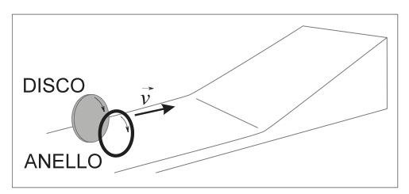
Se entrambi gli oggetti continuano a rotolare senza scivolare salendo lungo il piano inclinato, quale dei due percorrerà un tratto maggiore prima di fermarsi?- L'anello.
- Il disco.
- L'anello e il disco percorreranno lo stesso tratto.
- Dipende dall'angolo di inclinazione del piano inclinato.
- Dipende dalla lunghezza del piano inclinato.
-
Il grafico della velocità in funzione del tempo in figura rappresenta il moto di un carrello di massa 3 kg che descrive una traiettoria rettilinea.
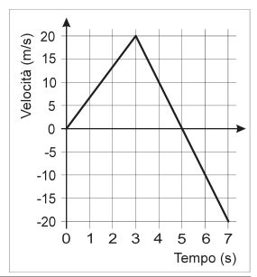
Quanto vale la variazione della quantità di moto del carrello tra gli istantit 1 = 1.5 s et 2 = 3 s?- 20 kg m s-1
- 30 kg m s-1
- 60 kg m s-1
- 80 kg m s-1
- 90 kg m s-1
-
Due carrelli si trovano su una rotaia a cuscino d'aria, disposta orizzontalmente, su cui possono muoversi con attrito trascurabile. Il carrello A, di massa
m A, si muove con una velocitàv 0 e urta contro un carrello B, di massam B = 9m A, inizialmente fermo. Nell'urto, i due carrelli restano agganciati.
Quale frazione dell'energia cinetica iniziale del sistema viene trasformata in altre forme (energia sonora, termica. . .) nella collisione?- 1%
- 10%
- 50%
- 90%
- 99%
-
Un ragazzo e una ragazza stanno pattinando sul ghiaccio. Ad un certo istante, quando sono vicini e fermi, si danno una spinta, allontanandosi e poco tempo dopo sono distanti 8.0 m. La massa del ragazzo è 75 kg, quella della ragazza 45 kg. L'attrito è trascurabile.
Qual è lo spazio percorso dalla ragazza in questo intervallo di tempo?- 8.0 m
- 6.5 m
- 5.0 m
- 4.0 m
- 3.0 m
-
In una partita di tennis uno dei giocatori respinge la palla che gli viene incontro alla velocità di 20 m s-1; la palla, la cui massa è di 58 g, viene respinta nella stessa direzione. Il giocatore applica alla palla, con la racchetta, una forza media di 1.24 kN per un tempo di 3 ms.
Che velocità ha la palla appena è stata respinta?- 19 m s-1
- 25 m s-1
- 35 m s-1
- 44 m s-1
- 48 m s-1
-
Un satellite si sta muovendo a velocità
v 0 quando improvvisamente un componente interno esplode spaccandolo in due pezzi di uguale massa che si allontanano uno dall'altro con velocità di modulov 1 ev 2 rispettivamente, come mostrato in figura.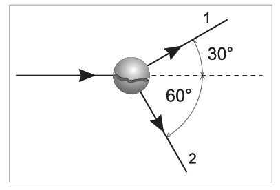
Quali delle seguenti relazioni tra i moduli delle velocità dei due pezzi è quella corretta?-
v 1 =v 2 -
v 1 = 1.2v 2 -
v 1 = 1.3v 2 -
v 1 = 1.7v 2 -
v 1 = 1.9v 2
-
-
Un disco pesante omogeneo, lasciato da fermo in cima ad un piano inclinato di altezza
h (v. figura), rotola giù senza strisciare. Si può supporre che la resistenza dell'aria e altre forze dissipative siano trascurabili.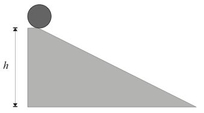
Quale sarà la velocità finale del disco in fondo al piano inclinato?-
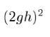
-
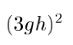
-
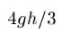
-
Un cannoncino giocattolo è fissato a un carrellino che si muove verso destra con velocità
v lungo un binario rettilineo, come mostrato in figura. Il cannone è puntato nella direzione del moto. Quando il cannone spara un proiettile il carrello e il cannone, per il contraccolpo, si fermano. Indichiamo conM la massa del carrello col cannone (compreso il cannone ma escluso il proiettile), e conm la massa del proiettile.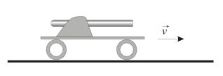
Qual è la velocità del proiettile rispetto al suolo subito dopo che esso è stato sparato?-
Mv / m -
(M+m)v / m -
(M-m)v / m -
mv / M -
mv / (M-m)
-
-
Una pallina, inizialmente ferma, viene colpita con una mazza da golf. Il grafico mostra l'andamento temporale dell'intensità della forza applicata dalla mazza alla pallina, durante il colpo.
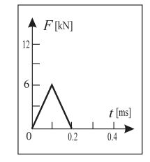
Una seconda pallina, di tipo diverso, ma della stessa dimensione e massa della prima, viene colpita con la stessa mazza. La pallina schizza via con la stessa velocità della prima.
Quale, tra i seguenti grafici, può rappresentare l'intensità della forza applicata dalla mazza alla seconda pallina? -
Un blocco di 2 kg di massa scivola senza attrito su un piano orizzontale alla velocità di 10 m s-1 fino ad urtare centralmente un secondo blocco, fermo, avente una massa di 10 kg.
Dopo l'urto il primo blocco torna indietro alla velocità di 5 m s-1, mentre il secondo procede in avanti - sulla stessa retta - alla velocità iniziale di 3 m s-1.
Quale affermazione è corretta?- La Q.d.M. del sistema si conserva, l'energia cin. del sistema si conserva, l'urto è elastico.
- La Q.d.M. del sistema si conserva, l'energia cin. del sistema non si conserva, l'urto è anelastico.
- La Q.d.M. del sistema si conserva, l'energia cin. del sistema non si conserva, l'urto è elastico.
- La Q.d.M. del sistema non si conserva, l'energia cin. del sistema non si conserva, l'urto è anelastico.
- La Q.d.M. del sistema non si conserva, l'energia cin. del sistema non si conserva, l'urto è elastico.
-
In quale delle alternative seguenti c'è una grandezza vettoriale con la rispettiva unità di misura del Sistema Internazionale (SI)?
- peso - chilogrammo
- massa - chilogrammo
- peso - newton
- quantità di moto - newton
- pressione -pascal
-
La macchina X è stata progettata in modo che la parte frontale possa schiacciarsi più facilmente della parte occupata dai passeggeri, nel momento dell'urto contro un ostacolo rigido, per esempio un muro; questa struttura è detta
attenuatore d'urto .
Una seconda macchina, Y, ha uguale massa ma non è dotata dell'attenuatore.
Per studiare la sicurezza delle due macchine si effettua uncrash-test , lanciando le due macchine, con la stessa velocità, contro due muri identici.
Quali delle seguenti affermazioni sono vere?
1 - La forza media sulla macchina X è minore di quella sulla macchina Y.
2 - Il tempo impiegato a fermarsi dalla macchina X è maggiore che per la Y.
3 - La variazione di quantità di moto per la macchina X è minore che per la macchina Y.- Solo la 1.
- La 1 e la 2.
- La 1 e la 3.
- La 2 e la 3.
- Tutte e tre.
-
Due carrelli si muovono lungo una retta e si urtano. I dati relativi sono rappresentati nella figura (in alto). Dopo la collisione i due carrelli si muovono come si vede nella parte in basso della figura.
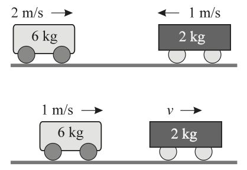
Qual è il modulo della velocitàv del carrello da 2 kg sopo l'urto?- 1.25 m s-1
- 1.75 m s-1
- 2.0 m s-1
- 4.0 m s-1
- 5.0 m s-1
-
Due automobili hanno peso diverso e viaggiano a velocità diverse su un rettilineo pianeggiante. Per arrestare le due automobili nello stesso intervallo di tempo sono necessarie due forze diverse. In ogni caso, la forza maggiore è quella richiesta per fermare l'automobile che ha maggiore . . .
- . . . energia cinetica.
- . . . massa.
- . . . peso.
- . . . quantità di moto.
- . . . velocità.
-
Un'automobile di massa
m = 1.2 x 103 kg accelera uniformemente, su un tratto rettilineo di strada, dav 1 = 10 m s-1 av 2 = 20 m s-1 in 5 s.
Quanto vale l'intensità della forza risultante che ha agito sull'automobile durante questo intervallo di tempo?- 1.2 x 103 N
- 2.4 x 103 N
- 4.8 x 103 N
- 1.2 x 104 N
- 2.4 x 104 N
-
Un blocco di massa
M scivola lungo una rampa da un'altezzah 0 e urta un altro blocco di massa 2M inizialmente fermo sul piano orizzontale. I due blocchi restano uniti e proseguono risalendo su una seconda rampa fino ad un'altezzah 1. I tre piani sono opportunamente raccordati in modo che non ci siano irregolarità nel moto dei blocchi.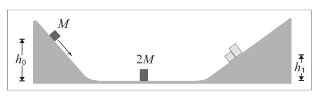
Supponendo di poter trattare le masse come puntiformi e di poter trascurare gli effetti di attrito tra tutte le superfici, quanto valeh 1?-
h 0 -
h 0 / 2 -
h 0 / 3 -
h 0 / 4 -
h 0 / 9
-
-
Una pattinatrice sta ruotando su se stessa con le braccia allargate alla velocità angolare di 3.0 rad s-1. In tale situazione il suo momento di inerzia vale 0.8 kg m2. Ad un certo istante chiude le braccia lungo il corpo e la sua velocità angolare raggiunge i 7 rad s-1. Si può trascurare qualsiasi forma di attrito e la resistenza dell'aria.
Qual è il momento di inerzia della ragazza con le braccia lungo il corpo?- 0.15 kg m2
- 0.34 kg m2
- 0.56 kg m2
- 1.5 kg m2
- 1.8 kg m2
-
In un incidente automobilistico un passeggero avente massa di 44 kg e velocità di 15 m s-1 viene fermato in 0.10 s.
Qual è l'intensità della forza media che agisce sul passeggero durante l'incidente?- 293 N
- 440 N
- 660 N
- 4400 N
- 6600 N
-
Un pezzo di ghiaccio cade verticalmente sulla superficie ghiacciata di un lago e si frantuma in tre pezzi che schizzano via parallelamente alla superficie del lago, come schematizzato in figura che rappresenta la situazione vista dall'alto.
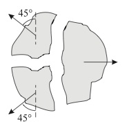
Se il pezzo più grosso, di 4.0 kg, inizia a muoversi a 4.0 m s-1, con che velocità partono i due pezzi più piccoli, entrambi di 2.0 kg?- 4.1 m s-1
- 4.9 m s-1
- 5.7 m s-1
- 5.9 m s-1
- 9.8 m s-1
-
Una pattinatrice su ghiaccio ha un momento d'inerzia, calcolato rispetto ad un asse di rotazione verticale, di 4.0 kg m2 quando le sue braccia sono allargate. Se sta ruotando alla velocità angolare di 3.0 rad s-1 con le braccia allargate, e poi avvicina le braccia al busto, la sua velocità angolare aumenta fino a 7.0 rad s-1 in 0.5 s. Si supponga di poter trascurare l'attrito tra pattini e ghiaccio e quello dell'aria.
Qual è il momento totale delle forze che agiscono sulla pattinatrice, rispetto all'asse di rotazione, mentre avvicina le braccia al busto?- 1.0 N m
- 1.6 N m
- 2.7 N m
- 5.3 N m
- 0 N m
-
Un disco di massa M, che si muove con velocità di modulo v, urta frontalmente un secondo disco di massa 2M e velocità di modulo v /2, come mostrato in figura; i due dischi stanno scivolando su di un piano orizzontale con attrito trascurabile.
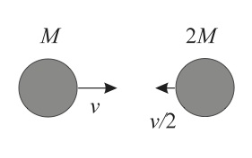
Se dopo l'urto i due dischi rimangono attaccati, la loro velocità ha modulo- 0
- v / 2
- √2v / 2
- √3v / 2
- 3v / 2
-
Due blocchi, il primo di massa M e il secondo di massa 2M, sono appoggiati su un piano orizzontale senza attrito e sono inizialmente fermi. A ciascun blocco viene applicata la stessa forza orizzontale, di modulo F, per lo stesso intervallo di tempo Δt.
Qual è il rapporto tra l'energia cinetica del secondo blocco e quella del primo, quando la forza ha cessato di agire?- 0.0625
- 0.125
- 0.25
- 0.5
- 1